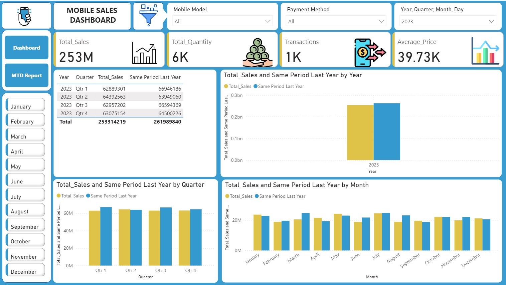

Mobile Sales Dashboard
This project provides a comprehensive analysis of mobile sales data, leveraging key metrics such as Average Price, Sales, Quantity, and Transactions. The dashboard offers dynamic insights into sales trends, helping businesses understand performance and make informed decisions.
Inspiration and Motivation
In the ever-evolving mobile industry, understanding key sales metrics can help businesses optimize strategies, increase profitability, and stay ahead of trends. I created this dashboard to provide insights into mobile sales performance by analyzing price per unit, total sales, quantities sold, and transactions. This project aims to make it easier for mobile sales teams to track performance and identify areas for improvement.
Purpose of the Project
The main goal of this project is to visualize and analyze sales performance data for mobile products. The dashboard provides insights into key areas such as:
- Average Price per Unit
- Month-to-Date (MTD) Total Sales
- Comparison of Sales to Same Period Last Year
- Total Quantity Sold
- Transaction Count
Key Metrics and Formulas
The dashboard leverages the following DAX formulas to calculate and visualize critical sales metrics:
- Average Price:
Average_Price = AVERAGE(Sales_Data[Price Per Unit]) - MTD Total Sales:
MTD = TOTALMTD([Total_Sales], Custom_Calendar[Date].[Date]) - Sales Comparison to Same Period Last Year:
Same Period Last Year = CALCULATE([Total_Sales], SAMEPERIODLASTYEAR(Custom_Calendar[Date].[Date])) - Total Quantity Sold:
Total_Quantity = SUM(Sales_Data[Units Sold]) - Total Sales:
Total_Sales = SUMX(Sales_Data, Sales_Data[Units Sold] * Sales_Data[Price Per Unit]) - Total Transactions:
Transactions = COUNTROWS(Sales_Data)
Data Source
The data used in this project is sourced from Sales_Data, which includes records of mobile product sales, including the price per unit, units sold, and transaction details. The data is structured to allow dynamic analysis over time and across different sales periods.
Dashboard Overview
1. Sales Overview Dashboard

This dashboard gives a quick overview of the sales performance, including:
- Average price per unit
- Month-to-date total sales
- Comparison of sales to the same period last year
- Total quantity sold
Questions Answered:
- What is the average price per unit sold?
- How do current sales compare to the same period last year?
- What is the total quantity sold month-to-date?
2. Transaction Insights

This dashboard focuses on transaction metrics, including:
- Total number of transactions
- Average transaction size
- Sales trends over time
Questions Answered:
- How many transactions have been completed this period?
- What is the average size of transactions?
- How have sales trends evolved over time?
Key Questions Answered
- What is the average price per unit?
- How does total sales compare month-to-date versus the same period last year?
- How much quantity has been sold in the current period?
- How many transactions have occurred in total?
Tools Used
- Microsoft Power BI for creating and visualizing the dashboard
- DAX formulas for calculating sales metrics and performance comparisons
Conclusion
This dashboard offers valuable insights into mobile sales performance, enabling sales teams to track trends, compare current sales to historical performance, and make data-driven decisions. By utilizing key metrics and visualizations, the dashboard serves as a vital tool for sales optimization and forecasting in the mobile industry.
Contact
If you have any questions or feedback, feel free to reach out to the project creator.